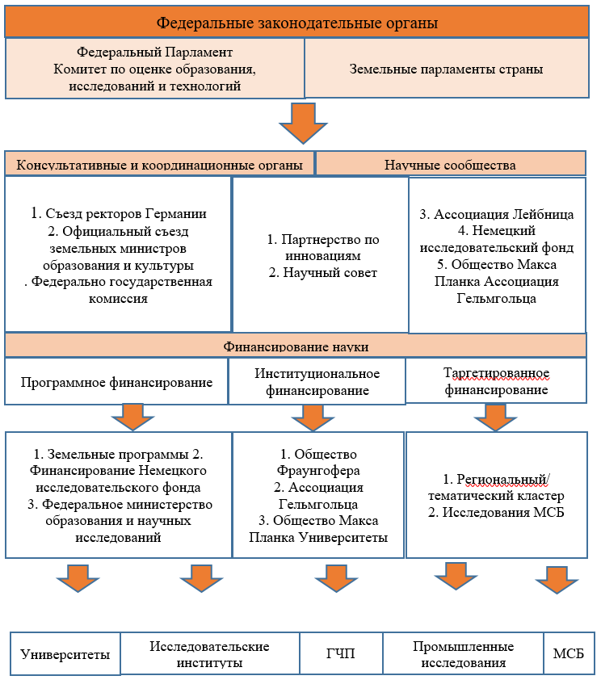
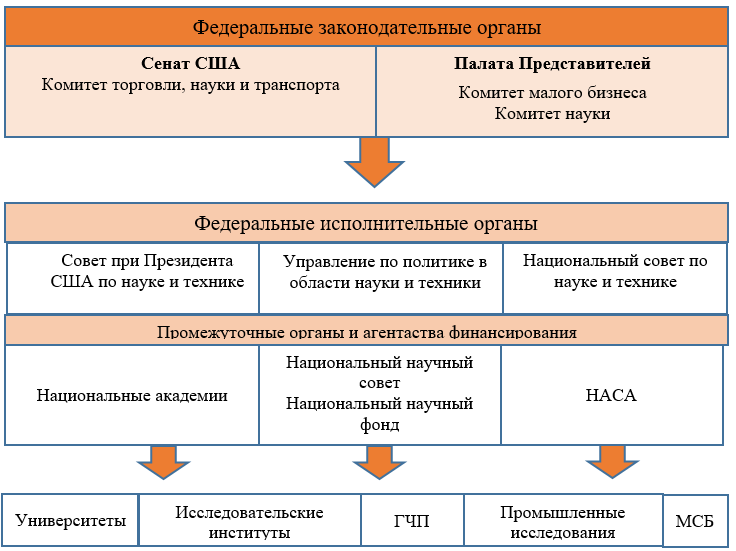

1.3 Выработка рекомендации по управлению научной, научно-технической, научно-инновационной деятельностями, включая работы коллегиальных органов при государственных органах
В настоящее время в Республике Казахстан наиболее остро встает вопрос об эффективности управления научными и научно-инновационными деятельностями, о необходимости разработки специальных управленческих инструментов и методов, которые бы позволяли формировать действенные организационно-экономические механизмы накопления и умножения научных знаний, внедряемых в отечественные наукоемкие предприятия. Главной целью исследований в этой предметной области является повышение уровня обоснованности управленческих решений в научно-технологической сфере.
Ряд исследователей, которые изучают данную проблематику, основываются на общих методах управления, которые в большинстве своем являются так называемыми «классическими» методами. При этом они используют общие методы управления наряду с методами, которые присущи для управления научно-инновационными проектами, и внедряют совокупность таких методов именно в отношении НИУ, что и предопределяет их существенные особенности [1-4]. Следует отметить, что актуальность данного типа задач привела к появлению понятий «научного менеджмента» и «менеджмента знаний» [5]. Еще в начале XX века П. Фримен сформулировал гипотезу о целесообразности описания процесса выполнения научных исследований с точки зрения процесса управления [6], которая потом была реализована при построении модели данного процесса в сетях типа GERT (Graphical Evaluation and Review Technique). В качестве характерных состояний сети используются: определение задачи в соответствии с заданной потребностью; определение вариантов (гипотез) решения; оценка и выбор наилучшего варианта (параллельных вариантов); построение модели для определения результата решения задачи; внедрение полученного результата [7, 8].
Однако существующие подходы к управлению научной деятельностью, рассматривающие лишь ее отдельные сферы, не позволяют сформировать общую теоретическую базу. Отсутствие целенаправленной интеграции всех составляющих системы управления научной и научно-инновационной деятельностью и ориентации всех структур научной организации на достижение поставленных целей препятствует эффективной трансформации знаний сотрудников в активы, приносящие прибыль. В связи с этим представляется необходимым разработать рекомендации по управлению научной и научно-инновационной деятельностями, включая работы коллегиальных органов при государственных органах.
Большой класс существующих работ 1 уровня посвящён изучению проблем взаимосвязи государства и науки, в частности государственному регулированию науки. Как отмечается в докладе ОЭСР «Перспективы науки, технологий и инноваций» («Science, Technology and Innovation Outlook») наука в государственном секторе будет продолжать играть ведущую роль в развитии знаний и навыков, которые будут использоваться в экономике в целом. Но при этом и сама она будет трансформироваться. Новые технологии открывают новую эпоху для научных исследований, ведь большие массивы данных и алгоритмы генерируют огромные объёмы данных, изменяя научную методику и требования к инструментам и навыкам, а также создавая новые области исследований [9].
В работе [10] выделены следующие шесть аспектов взаимоотношений государства и науки: 1. государство как законодатель; 2. государство как источник средств для научных исследований; 3. государство как потребитель научной и наукоёмкой продукции; 4. государство как крупный субъект научно-технической деятельности; 5. государство как координатор действий всех секторов экономики по развитию национального научно-технического потенциала; 6. государство как политическая сила, во многом определяющая позицию общества по вопросам развития науки и техники.
При реализации Закона Республики Казахстан «О науке» (далее – Закон) возникло множество вопросов, вызывающих разнонаправленные реакции в академической среде и ставших предметом острых обсуждений в СМИ. Основное внимание общественности привлекают вопросы распределения бюджетных средств, механизмы финансирования, эффективность использования средств, результативность научных исследований и тесные связи с реальным сектором экономики. До настоящего момента в Казахстане не проводились исследования, направленные на ответы на эти актуальные вопросы:
1. Выявления ключевых факторов, обусловливающих недостаточную эффективность научной деятельности, и выявление проблем при реализации Закона.
2. Определения путей, способствующих повышению эффективности научной деятельности, а также формулирование рекомендаций для усовершенствования нормативного регулирования в области науки, учитывая ключевые показатели, отражающие уровень научно-технического потенциала страны и динамику его развития. Такими показателями являются эффективность управления наукой, объемы финансирования и кадровый потенциал.
Отчет представляет основные результаты анализа не только реализации норм Закона, но и общего состояния науки в Республике Казахстан по вышеупомянутым параметрам в сравнении с аналогичными показателями стран-лидеров в научных достижениях. В нем рассматриваются вопросы структуры управления наукой и результативности научной деятельности, а также предлагаются конкретные рекомендации по усовершенствованию нормативного правового регулирования в развитии научной и инновационной сферы в стране.
Основные тезисы
В Казахстане созданы необходимые правовые основы для регулирования отношений в области науки, включая основные законы, указы президента, постановления правительства, приказы министерств и ведущих отраслевых государственных органов (далее – ЦГО). Система управления наукой в стране построена в значительной степени по образцу ведущих государств, например, ВНТК, ННС, МНВО и ЦГО. Однако реализацию государственной политики в области научно-технической и инновационной деятельности осуществляют МНВО и другие ЦГО, обладающие своей ведомственной наукой, что затрудняет единую координацию между научной и инновационной сферами.
Закон регламентирует научную и научно-техническую деятельность, а Закон РК «О коммерциализации результатов научной и (или) научно-технической деятельности» регулирует коммерциализацию результатов этих видов деятельности, входящую в сферу науки. Такое разделение на законодательном уровне создает две параллельные государственные политики в области науки. В результате этого наблюдается неравномерное развитие и отсутствие экономического взаимодействия между различными элементами научной и инновационной инфраструктуры (НИИ, вузы и другие субъекты научной и (или) научно-технической деятельности), что приводит к неэффективности механизмов передачи знаний и новых технологий на внутренний и мировой рынки.
Отсутствие хорошо налаженной системы выявления актуальных задач для научного сообщества со стороны администраторов (включая государственные органы) бюджетных научных программ приводит к тому, что многие научные проекты формируются на основе заявок самих научных организаций. Таким образом, финансируются исследования, которые могут и хотят провести эти НИИ, а не те, которые действительно необходимы государству.
▪ По мнению казахстанских ученых, основными факторами, влияющими на недостаточную эффективность научной деятельности и проблемы в реализации Закона, являются отсутствие системности и последовательности в проведении реформ, постоянные изменения в управлении подходов наличия множества учреждений, центров и комитетов, ответственных за управление наукой, но не имеющих прямого отношения к ней. Также отмечается отсутствие четко определенных компетенций, необходимых для руководителей в области науки, конкретных квалификационных требований, а также отсутствие законодательной базы для преодоления разрыва между исследованиями и их практическим применением.
▪ В Казахстане доля ВВП, выделяемая на научные исследования, составляет 0,13%, что в 15 раз меньше минимального уровня, обеспечивающего экономическую безопасность страны. Эта цифра также в 10 раз ниже рекомендуемого уровня для развивающихся стран и в 23 раза меньше, чем рекомендация ОЭСР.
▪ Финансирование одного ученого в Казахстане в долларах США по паритету покупательной способности (ППС) снижается, в то время как в развитых странах этот показатель увеличивается.
▪ Недостаточное финансирование приводит к низкому уровню технологического обеспечения научной базы, необходимости модернизации технологий в науке, оборудования НИИ и вузов современными средствами, а также низкой капитализации научных результатов. Это в свою очередь снижает привлекательность научных организаций и инновационных предприятий для инвестиций и кредитования.
▪ Доля предпринимательского сектора в расходах на исследования в различных секторах растет, но все еще остается ниже, чем в большинстве развитых стран, таких как Израиль (85,6%), Япония (78,8%), Республика Корея (77,7%) и США (71,2%).
▪ Низкий интерес бизнеса к науке, невостребованность технологических разработок и результатов научных исследований, отсутствие эффективных механизмов внедрения интеллектуальных результатов в хозяйственную практику, а также слабые связи между научными организациями, вузами и предприятиями приводят к технологической отсталости экономики и значительной нагрузке на государственный бюджет.
▪ Ограничения на использование бюджетных средств, выделяемых для развития инновационной деятельности научными организациями, а также отсутствие развития малого инновационного предпринимательства (в том числе без образования юридического лица) связаны с законодательными ограничениями.
▪ В структуре научных исследований в Казахстане преобладают прикладные исследования (60%), в то время как фундаментальные исследования составляют 15%, а научно-технические разработки - 25%. В развитых странах это соотношение обычно составляет 15:25:60.
▪ Низкая пропорция ученых в общем числе населения создает слабую конкурентную среду, что ведет к низкому уровню качества научных исследований (900 ученых на 1 млн. населения в РК). Этот показатель почти в 2 раза ниже, чем в КНР (1235), в 3 раза меньше, чем в Беларуси (1805), в 4 раза меньше, чем в РФ (2852), в 6 раз меньше, чем в США (4256), в 8 раз меньше, чем в Японии (5304), в 11 раз меньше, чем в Южной Корее (7514), и в 12 раз меньше, чем в Израиле (8251). Недостаточная доля ученых в общем населении также является причиной ослабленного развития независимого научного экспертного сообщества, что в свою очередь приводит к необъективности отбора и оценки научных исследований.
▪ Научное сообщество отмечает недостаточный приток молодых специалистов, что, вместе с низким уровнем владения английским языком и низким качеством результатов научной деятельности, отрицательно сказывается на международной конкурентоспособности казахстанской науки.
▪ В связи с этим рекомендуется разработка единого закона, который бы регулировал сложные взаимоотношения между наукой, инновациями и производством, а также разработка других нормативно-правовых актов, включающих в себя:
• Расширение полномочий Национального совета по науке и технологиям при Президенте Республики Казахстан в части интеграции науки, инноваций и производства.
• Улучшение работы Национальной академии наук РК при Президенте РК в качестве единого органа, координирующего взаимосвязь между наукой и инновационной деятельностью, развитие науки во всех отраслях экономики, связь науки и производства, переход к реализации целевых технологических платформ, развитие технопарков, конструкторских и исследовательских бюро в промышленных предприятиях, центрах внедрения инноваций, исследовательских университетах, а также расширение функций по формированию базы целевых показателей, глубокой и развернутой экспертно-аналитической и прогнозной работы, определения состояния и дальнейшего развития научной сферы в республике, критического анализа, выработки рекомендаций и предложений по развитию науки и инноваций.
• Введение ключевых целевых показателей результативности и индикаторов управления и финансирования науки, модернизации научно-исследовательской инфраструктуры, кадровой политики, а также статистики, соответствующей мировой практике.
• Проведение аудита науки (1 раз в 3 года) для изучения состояния и оценки работы НИИ, вузов и других научных организаций, определения задач и направлений стратегического развития, а также координации государственной политики развития науки.
• Создание системы мониторинга состояния и развития технологической базы казахстанской науки.
• Задачи по достижению регионального или мирового лидерства в ключевых технологических направлениях перед действующими НИИ.
• Возможность вносить изменения в утвержденные планы финансируемых научных проектов в процессе их реализации с учетом характера и специфики научного творчества.
• Четкое определение функций отечественной и зарубежной экспертизы с дифференцированным подходом к естественным, техническим и гуманитарным наукам.
• Внедрение механизма формирования абсолютно «прозрачного» и независимого списка членов ННС, автоматически формирующегося из общего списка ученых, имеющих необходимый (более высокий, чем 3) уровень индекса Хирша с правом самоотвода.
• Институциональное разделение двух групп функций ННС, находящихся в системном конфликте интересов.
1. Оценка научной новизны, уровня разработанности, перспективности, экономической обоснованности исследования, а также определение потребности государства в нем с последующим конкурсным отбором и определением формы и объема финансирования представляют собой ключевые этапы процесса.
2. Осуществление мониторинга, прием отчетов и выполнение всех карательных функций относительно проекта и его руководителя требуют внимательного внедрения следующих изменений:
- Исключение дублирования функций ННС и ГНТЭ в части оценки соответствия научных и научно-технических проектов мировому уровню развития науки и техники, а также приоритетам развития научной, научно-технической и инновационной деятельности.
- Обеспечение детальности решений ГНТЭ по выставлению баллов проектам (узкоспециализированная оценка) и исключение возможности игнорирования баллов ГНТЭ.
- Реализация более прозрачных процедур отбора экспертов для ГНТЭ, исключающих возможность самостоятельного выбора экспертами научных проектов для экспертизы.
- Пересмотр практики отчётности и контроля по финансируемым научным проектам с целью предотвращения бюрократизма и коррупции.
- Улучшение информационной прозрачности в инновационной сфере, включая обязательное широкое распространение информации о новых технологиях и потенциальных рынках сбыта для принципиально нового продукта. Также необходимо обеспечить доступ к информации об объектах вложения капитала с высоким потенциалом доходности, особенно для частных инвесторов и кредитных организаций.
Существующая законодательная база в области науки детально охватывает и регулирует общественные отношения.
Основным законодательным документом в данной сфере является Закон, который включает в себя 8 глав и 33 статьи. В течение периода с 2013 по 2023 год внесено 25 изменений в этот Закон.
Изменения внесены для уточнения следующих аспектов:
- ключных понятий, используемых в Законе;
- нормативного регулирования в сфере науки и научно-технической деятельности при формировании и выполнении государственного оборонного заказа;
- компетенции Правительства, уполномоченных органов и отраслевых уполномоченных органов;
- вопросов оплаты труда и поощрения научных работников; задач ВНТК;
- введены новые нормы, касающиеся апелляционной комиссии;
- пересмотрены задачи Национального научного совета и функции Национального центра государственной научно-технической экспертизы; порядка проведения ГНТЭ;
- регламентирован государственный учет научных, научно-технических проектов и программ, а также отчетов о научной и (или) научно-технической деятельности;
- определены новые правила грантового финансирования;
- предусмотрено выделение части доходов от коммерциализации результатов научной и (или) научно-технической деятельности в эндаумент-фонд вузов, финансирующих проведение научного исследования или его коммерциализацию.
Тем не менее, обширные обсуждения в общественном пространстве и выступления в СМИ относительно сложностей в реализации научной деятельности указывают на актуальность внесения изменений и улучшения нормативной правовой базы, регулирующей область науки.
1.3.1 Выработка соответствующих ресурсных и регуляторных инструментов по управлению научной, научно-технической, научно-инновационной деятельностями. Проекты регуляторных инструментов с обоснованиями
Введение в повседневную регуляторную практику новейших регуляторных технологии (инструментов) – РегТех (франц. – «technologie réglementaire»; испанск. – «tecnología regulatoria»; англ. – «regulatory technology», сокращ. – «LegalTech», «RegTech») реализует (и предопределяет) тектонические сдвиги, изменения в фундаментальной парадигме регулирования.
Концепт новейших регуляторных технологий и инструментов может оцениваться как онтологически входящий в мета-концепт «государства как опытные лаборатории» (англ. – «states-as-laboratories») и в мета-концепт новейших публично-управленческих технологий (англ. – «GovTech» или «PubTech»), либо может оцениваться как самостоятельный, но в любом случае пересекающийся с вышеуказанными концептами [11-14].
Использование новейших регуляторных технологий (технологических решений для регуляторных онтологий и процессов) сегодня стало уже трендом и актуальной практикой реформирования законодательства во многих государствах мира. Вопросы механизмов институционализации новейших регуляторных технологий, как и самих новейших регуляторных технологий, ныне на слуху, всё более часто и активно находят отражение в научных публикациях [15], но до сих не получили необходимых научных объяснений. Субъекты регулирования – субъекты, на которых распространяется действие нормативных правовых актов, предусматривающих регуляторные инструменты и (или) требования или ужесточающих регулирование, в том числе субъекты предпринимательства и иные лица [16].
Новейшие регуляторные технологии и инструментарии представляют собой совокупность масштабируемых (от аксиальных (точечных) корригирований до самых массированных преобразований), операционабельных индивидуализированно сформированных и итеративно-адаптируемых технологий и инструментов проектирования, производства, оценки, валидации, оперирования и доработки нормативных онтологических единиц и комплексов (норм и их групп, нормативных режимов и актов, групп актов) как правового, так и экстра-правового, и гибридного регулирования, создаваемых и реализуемых в целях:
– конструирования систематически корригируемой и реадаптируемой казуально-проектируемой регуляторной эко-среды – нормативного субпространства, конвенционально (условно) аппроксимированного под ожидания, запросы, требования и интересы участников с учётом публичных интересов (в условиях отсутствия до того необходимого правового регулирования);
– обеспечения высоких гибкости, адаптированности (адаптируемости), операционабельности регулирования, обеспечение оперативности его релевантных реадаптации, перенастройки и корригирования, с минимизацией финансово-экономических и временны́х затрат на норморайтерско-проектировочный и нормотворчески- производственный процесс;
– обеспечения высокоскоростных экспериментальных, активно-моделирующих (в том числе цифровых) и иных тестирований (апробаций) готовых прототипов (комплексных решений) регуляторных режимов или экспериментальных разработок проектируемых регуляторных режимов и их запуска в расчётные форматы и размерности;
– упрощения и упраздняющего (или трансформирующего) «прореживания» (в том числе пакетированного) массивов нормативно-правовых актов, продолжение регуляторного существования которых не имеет необходимых и достаточных оснований и обоснований с точки зрения законности, разумной рациональности, публичных интересов, ожиданий и запросов в сфере экономики, социальной жизни и др. [16].
Необходимость и значимость использования новейших регуляторных и технологий, и инструментариев обусловлены следующими обобщёнными резонами:
– возможности существенно более адекватного, операционабельного, масштабируемого, гибкого регулирования, регулирования исходя из «частокола» точек обратной связи и корригирования по результатам, целям и преимуществам, увеличения количества инвазивно-контролируемых (жёстко «опекаемых») организаций – без избыточных помехосоздающих вмешательств;
– возможности снижения редундантности регуляторного давления, обеспечения более щадящего регулирования, обеспечения повышения устойчивости регулируемых систем, в том числе за счёт оперативного совершенствования способов надлежащего соблюдения нормативных требований, за счёт реализации более дальновидной политики и более релевантной (и необременяющей) сопрягающей подстройки к надзору (реализуемому со стороны уполномоченных контрольно-надзорных органов), за счёт преодоления ограничений, связанных с необходимостью в определённых случаях физического присутствия представителей органов публичной власти;
– возможности минимизации временных и финансовых затрат на сопровождение и обеспечение соответствия нормативным требованиям (в том числе на оперирование рисками), возможности уйти от чрезмерной и обременяющей дороговизны и затратности соблюдения нормативных требований;
– повышение результативности, точности, полноты, экономичности и оперативности оперирования рисками и неопределённостями, возможности более эффективного задействования риск-ориентированных подходов (повышенная сложность и значительные объёмы нормативно-правовых актов при большом количестве в обработке структурированных и неструктурированных данных обусловливают существенные риски негативные последствий);
– возможности автоматизации целых линеек функций (машиночитаемое право, цифровые модели-двойники) в рамках государственного регулирования с редуцированием вероятностей возникновения обусловленных человеческим фактором ошибок и потенциального ущерба от них;
– более эффективный учёт требований и интересов обеспечения кибербезопасности;
– оптимизированный доступ к новым прикладным аналитическим технологиям и инструментариям (включая технологии машинного обучения и искусственного интеллекта).
В сентябре 2020 года в Послании народу Казахстана «Казахстан в новой реальности: время действий» Глава государства поручил внедрить регулирование «с чистого листа». Ключевые задачи по проведению реформы отражены в Указе Главы государства о мерах по внедрению новой регуляторной политики, который был подписан 31 декабря 2020 года [17]. Во исполнение данного поручения отечественными и зарубежными экспертами были выработаны базовые подходы и подготовлен соответствующий законопроект. 30 декабря 2021 года принят Закон Республики Казахстан «О внесении изменений и дополнений в некоторые законодательные акты Республики Казахстан по вопросам внедрения новой регуляторной политики в сфере предпринимательской деятельности и перераспределения отдельных функций органов внутренних дел Республики Казахстан» (далее – Закон) [18].
Ключевым посылом закона является то, что госрегулирование должно иметь место лишь в случае наличия риска для жизни и здоровья людей, экологии, правопорядка и нравственности. Наряду с этим, будут введены и другие, апробированные за рубежом инструменты обеспечения качества регулирования.
Закон направлен на то, что любые требования к бизнесу должны быть с понятными мотивами госрегулирования, практически исполнимыми, изложенными в доступной форме без двоякого толкования, удобными и необременительными. Уровень жесткости госрегулирования будет зависеть от уровня риска.
В этой связи, в Законе четко определены 7 базовых условий к формированию регуляторных требований включают:
1) обоснованность (регуляторные инструменты и\или требования вводятся исключительно в целях устранения имеющегося риска причинения вреда (ущерба) правам и законным интересам физических и юридических лиц, жизни и здоровью людей, окружающей среды, обороне и безопасности государства);
2) равенство субъектов предпринимательства (недопущение установления различных правовых режимов и требований для отдельных субъектов рынка, в том числе для субъектов квазигосударственного сектора);
3) открытость (понятность мотивов введения регуляторного инструмента и предоставление субъектам предпринимательства достаточного времени для приведения своей деятельности в соответствие с регуляторными инструментами);
4) исполнимость (практическая возможность исполнения субъектами предпринимательства вводимого регуляторного инструмента или требования);
5) определенность (изложение норм, регламентирующих регуляторные инструменты, в понятной, доступной форме, не допускающей двоякого толкования или неопределенности);
6) соразмерность и рациональность (соответствие уровня жесткости уровню риска наступления неблагоприятных событий);
7) последовательность (соответствие новых и (или) изменяемых регуляторных инструментов и(или) требований документам системы государственного планирования).
Целью анализа регуляторного воздействия является повышение действенности и эффективности государственной политики в части использования конкретных регуляторных инструментов и (или) требований, ужесточения регулирования через оценку альтернативных подходов регулирования для достижения определенных целей или решения четко определенных проблем.
Анализ регуляторного воздействия проводится до и после введения регуляторного инструмента и (или) требования, ужесточения регулирования, в том числе по действующим регуляторным инструментам и (или) требованиям, в отношении которых ранее не проводился анализ регуляторного воздействия.
Анализ регуляторного воздействия проводится регулирующими государственными органами/органами-разработчиками в случаях введения регуляторного инструмента и (или) требования, ужесточения регулирования в отношении субъектов предпринимательства, а также при пересмотре регуляторного инструмента и (или) требования.
Процедура анализа регуляторного воздействия включает следующие этапы:
1) проведение анализа регуляторного воздействия;
2) проведение общественных обсуждений результатов анализа регуляторного воздействия;
3) направление регулирующим государственным органом/органом – разработчиком в адрес уполномоченного органа следующих документов:
- результаты анализа регуляторного воздействия, содержащие:
- общую информацию по проекту правового акта;
- оценку соответствия условиям формирования регуляторных инструментов и (или) требований;
- аналитическую форму анализа регуляторного воздействия;
- проекты правового акта, а также предусмотренные документы для введения новых регуляторных инструментов и (или) требований или ужесточения регулирования;
- отчет общественных обсуждений на казахском и русском языках с приложением выгрузки с интернет-портала открытых нормативных правовых актов и протокола общественных обсуждений;
4) рассмотрение анализа регуляторного воздействия и предоставление заключения о соблюдении процедур проведения анализа регуляторного воздействия уполномоченного органа;
5) проведение анализа регуляторного воздействия в порядке альтернативы, в случае несогласия с выводами анализа регуляторного воздействия;
6) рассмотрение положительного заключения результатов анализа регуляторного воздействия Межведомственной комиссией или Региональной комиссией по актам регионального значения.
У всех новейших регуляторных технологий и инструментов есть свои достоинства и недостатки. В большинстве регуляторных контекстов используется комбинация различных стратегий регулирования. Но технологии не нейтральны – они запрограммированы с учётом предпочтений тех, кто их создаёт, кто курирует их развитие.
Хотя регуляторные технологии могут изменить правила игры, они не смогут изменить того факта, что интересы бизнеса не всегда совпадают с публичными интересами, для обслуживания которых создан регулирующий орган.
К рискам и проблемам использования новейших регуляторных и надзорных технологий могут быть отнесены следующие:
– кибер-риски, риски для безопасности данных (в частности, использование новых технологий может обусловливать или увеличивать кибер-уязвимость органов публичной власти), вероятность того, что локализация данных может существенно повышать риски для кибербезопасности;
– усиление зависимости деятельности органов публичной власти от третьих лиц – таких, как поставщики услуг «облачных сервисов»;
необходимость вложения большего количества ресурсов и затрат;
– вероятность создания препятствий для развития конкуренции (у новых участников зачастую нет необходимой инфраструктуры, опыта и финансовых ресурсов для выполнения новых требований законодательства);
– репутационные риски.
Модернизация механизмов проведения госконтроля и надзора.
Одним из больших блоков изменений является совершенствование системы госконтроля и надзора.
1. Вводится новая форма контроля как расследование. Это необходимо для установления истинных причин нарушения и принятия в отношении них соответствующих мер.
2. Проверки будут проводиться только на соответствие квалификационным или разрешительным требованиям по выданным разрешениям, требованиям по направленным уведомлениям. К примеру, сейчас проверки проводятся на предмет соответствия деятельности бизнеса требованиям, установленным законодательством.
3. В рамках профилактического контроля будет возможно проведение контрольного закупа. Контрольный закуп будет проводиться для выявления факта реализации продукции, не соответствующей требованиям в НПА или технических документах.
4. Новшеством также является градация деятельности субъектов по 3-м степеням риска (высокая, средняя и низкая). Ранее было 2 степени – высокая, невысокая. Введение 3 степеней позволит лучше настраивать систему проверок.
Справочно: в РФ 6 степеней риска. В странах ОЭСР – 3 степени.
5. Предусматривается «гибкая» система управления рисками, которая предусматривает использование информационных систем. Данная система будет делить предпринимателей по конкретным степеням риска и формировать списки проверяемых субъектов. При отсутствии такой информационной системы, госорган вправе осуществлять проверки и профконтроль с посещением в отношении не более пяти процентов от общего количества таких субъектов контроля и надзора в определенной сфере.
Данные нормы заставят госорганы автоматизировать систему оценки рисков и управлениями рисками.
Новые подходы к отчетности бизнеса. Законом предусмотрено закрепление требования о предоставлении бизнесом отчетности только в случаях, прямо предусмотренных в законах. При введении новой отчетности вносится дополнение в Реестр обязательных требований в сфере предпринимательства.
Усовершенствование института саморегулирования. Саморегулирование, основанное на обязательном членстве (участии) в сфере предпринимательской или профессиональной деятельности, вводится только при условии функционирования в данной сфере:
- саморегулируемых организаций, основанных на добровольном членстве (участии);
- и (или) иных некоммерческих организаций с обязательным членством субъектов профессиональной или предпринимательской деятельности, кроме НПП.
Способы регуляторного эксперимента могут быть сведены в 4 группы:
1) умственно-мыслительные выкладки и суждения, реконструкции и моделирования экспертного порядка с оцениванием регуляторных качеств и целедостижимости законопроектов (юрист описывает некоторый сценарий (фактический или гипотетический) и проигрывает его в своём сознании, в том числе профессионально-интуитивно);
2) письменная развёрнутая и детализированная экспертиза с разветвлённым полисценарным прогностическим анализом, расчётами, обоснованиями;
3) экспертизы регуляторных качеств и целедостижимости законопроектов посредством применения технологий цифровых моделей-двойников;
4) экспертизы регуляторных качеств и целедостижимости законопроектов посредством задействования метода практического реального регуляторного эксперимента.
Экспериментирование – это обособленная и часто решающая фаза политического процесса, когда регулирующие органы пытаются воспроизводить знания в контролируемых условиях, чтобы оценить вероятные последствия своих действий, прежде чем они станут необратимыми. Категория «регуляторный эксперимент» включает в себя множество экспериментальных модальностей – пилотные программы, оценки регулирующего воздействия, полевые испытания, модели и симуляции – все они обладают особым качеством разработки для получения новых знаний о политике в экспериментальном пространстве.
Регуляторный эксперимент предусматривает эмпирическое определение на основе выдвинутой базовой гипотезы и контролируемого опыта возможности и результативности задействования некоторых новых подходов и инструментов в нормативном правовом, нормативном техническом или ином регулировании. Обязательной составной частью проектирования регуляторного эксперимента является формулирование ответов на вопросы: какие отступления допущены, с какими целями, с какой продолжительностью и хронологической логической развёрткой, с каким порядком последующей текущей и финальной оценки.
1.3.2 Международный опыт применения экспериментальных регуляторных технологий и инструментов по управлению научной, научно-технической, научно-инновационной деятельностями
Германия. В Германии разнообразные организации несут ответственность как за горизонтальные, так и за вертикальные процессы управления, связанные с политикой в области науки и техники (рисунок 1.3.1).
Несмотря на то что Германия является федеративным государством, значительное количество исследовательских и инновационных мероприятий организовано и реализуется на региональном уровне. На федеральном уровне ключевым законодательным органом является Комитет по образованию, исследованиям и оценке технологий, который готовит предложения для парламента.
Примерно две трети научных исследований и проектов финансируются частными организациями, в то время как оставшаяся треть средств поступает из федерального бюджета и бюджетов земель. Ежегодно федерация выделяет около 1,8 миллиарда евро на исследования и научные проекты учреждений Общества им. Макса Планка, включающего около 80 научно-исследовательских институтов, преимущественно в области гуманитарных и естественных наук, а также биологии.
Исследовательские учреждения Сообщества германских научно-исследовательских центров им. Германа Гельмгольца получают около 4,7 миллиарда евро государственного финансирования и вовлекают около 25 тысяч ученых. Помимо Общества им. Макса Планка и Сообщества германских научно-исследовательских центров им. Германа Гельмгольца, Общество Фраунгофера проводит прикладные исследования за счет федерального бюджета. Более 80 учреждений, входящих в Общество им. Г.В. Лейбница, работают над долгосрочными, часто межотраслевыми, проектами.
|  | ||||||
|  | ||||||
![1. Съезд ректоров Германии
2. Официальный съезд земельных министров образования и культуры
. Федерально государственная комиссия
,Таргетированное финансирование,Финансирование науки ,Научные сообщества,Консультативные и координационные органы,Институциональное финансирование,Программное финансирование,1. Партнерство по инновациям
2. Научный совет
,3. Ассоциация Лейбница 4. Немецкий исследовательский фонд 5. Общество Макса Планка Ассоциация Гельмгольца,1. Региональный/
тематический кластер
2. Исследования МСБ
,1. Общество Фраунгофера
2. Ассоциация Гельмгольца
3. Общество Макса Планка Университеты
,1. Земельные программы 2. Финансирование Немецкого исследовательского фонда
3. Федеральное министерство образования и научных исследований](1.3.files/image003.png) |
||||||
Рисунок 1.3.1. Структура принятия решений в области науки в Германии
Немецкий исследовательский фонд (DFG) играет ключевую роль в инфраструктуре науки в Германии. Ежегодно фонд выделяет более 1,2 миллиарда евро на реализацию примерно 20 тысяч научно-исследовательских проектов, преимущественно в университетах. Как самоуправляемая организация, он является важным партнером для многочисленных зарубежных научно-исследовательских организаций.
Финансирование фонда осуществляется со стороны федерального правительства и правительств земель. DFG активно способствует укреплению исследовательского потенциала университетов, предоставляя финансирование для индивидуальных исследовательских проектов. Кроме того, фонд разрабатывает рекомендации по научным вопросам для парламента Германии и других институтов, принимая участие в различных научных директивных органах.
США. В Соединенных Штатах сформирована сложная система управления в области науки (см. Рисунок 1.3.2), включающая множество ведомств, ответственных за координацию научных исследований. Существуют центры промышленности и технологий, занимающиеся научной и образовательной деятельностью, и акцентируется важность стимулирования использования результатов, полученных благодаря федеральным фондам. Неправительственные организации, такие как Национальная Академия наук, Национальный исследовательский совет, а также крупные некоммерческие корпорации, включая Американскую ассоциацию развития науки, активно участвуют в разработке и внедрении научной политики.
Структура изображает основных участников процесса распределения средств науки из федерального бюджета. В американских университетах успешно осуществлена интеграция науки и образования, благодаря условиям, созданным для привлечения ведущих ученых со всего мира и полному оснащению лабораторий, что позволяет эффективно сочетать учебный процесс и научные исследования.
Национальные лаборатории, находящиеся под управлением неправительственных организаций, которые получают это право на конкурсной основе, представляют собой важную часть научного развития, работая параллельно с университетами. Особую роль в финансировании исследований играет Национальный научный фонд (NSF), который предоставляет временные гранты небольшим группам или индивидуальным исследователям.
В США действуют "центры коллективного пользования", управляющие крупным и дорогостоящим оборудованием, предоставляющим ученым и инженерам доступ к ресурсам, недоступным отдельным исследователям. Национальный научный фонд также направляет средства на поддержку работы оборудования в этих центрах, а также на финансирование исследовательских центров, океанографических судов и станций, включая те, что расположены в Антарктиде. Помимо этого, NSF финансирует совместные исследования частных организаций и университетов, участие США в международных проектах и программы в области науки и техники, а также образовательные инициативы на всех уровнях образования.
Фонд направляет 76% своего бюджета на осуществление исследований, в то время как 17% средств выделяется на поддержание человеческих ресурсов в сфере науки и образования. Покупка дорогостоящего оборудования занимает 3% бюджета Фонда. Стратегию деятельности Фонда определяет Национальный научный совет, состоящий из 24 членов с высокими полномочиями на государственном и международном уровне.
 |
|||
Рисунок 1.5.2. Структура принятия решений в области науки в США
Управление Фондом осуществляется Директором и правлением, назначаемыми президентом США и утверждаемыми Сенатом. Деятельность Фонда подвергается контролю со стороны Офиса главного инспектора, который находится в ведении Конгресса. Ежегодный бюджет Национального научного фонда составляет приблизительно 6,02 миллиарда долларов США. Фонд финансирует около 20% всех исследовательских работ, проводимых колледжами и университетами.
Япония. На текущий момент Япония установила несколько ключевых направлений в области науки, включая поддержку фундаментальных исследований, увеличение числа научных проектов, финансируемых на конкурсной основе, пересмотр системы трудоустройства в сторону контрактной деятельности и улучшение рабочих условий для молодых ученых.
В Японии осуществляется реализация пятилетних планов развития науки и технологий, а также проведение научно-технических программ. На уровне государства были приняты законы, соответствующие поставленным задачам. Ключевой структурой в области исследований и научных проектов является Совет по научно-технической политике, возглавляемый премьер-министром Японии. Этот орган включает представителей правительства, научные организации и представителей промышленности, занимающихся научной деятельностью. В Японии также действуют научные города, например, город Цукуба, объединяющие университеты, научно-исследовательские центры и лаборатории ведущих промышленных предприятий.
 |
||
![Совет по науке и технологиям,Таргетированное финансирование,МСБ,Финансирование науки ,Консультативные, координационные органы и научное сообщество,Институциональное финансирование,Программное финансирование,Университеты ,Исследовательские институты,ГЧП,Промышленные исследования,Бюро научной и технологической политики,Научный совет Японии,Исследования МСБ,1. Нациолнальный институт передовых промышленных наук и технологий
2. Университеты
,1. Японское научно-технологическое агентство
2. Японское общество продвижения науки](1.3.files/image009.png) |
||
Рисунок 1.5.3. Структура принятия решений в области науки в Японии
Китай. В Китае правительство активно формулирует политику в области научных исследований и оказывает конкретную финансовую и практическую поддержку. Министерства, включая Министерство науки и технологий (МНТ), координируют взаимодействие между правительством и научными организациями. Ключевыми элементами системы управления наукой в Китае являются Национальный народный конгресс (ННК), Государственный совет КНР, Китайская академия наук (КАН), Национальный фонд естественных наук (НФЕН), Китайская инженерная академия (КИА), Китайская ассоциация науки и техники (КАНТ), Национальный центр оценки науки и технологий (НЦОНТ), Организация государственных исследовательских институтов (ОГИИ).
Законы, касающиеся научных исследований и разработок (НИОКР), принимаются Национальным народным конгрессом, который играет ключевую роль в законодательной и правовой инфраструктуре для политики в этой области. Пятилетние программы охватывают обширные цели социально-экономического роста, промышленного планирования, а также фокусируются на науке и технике в ключевых секторах. Государственный совет КНР является верхним исполнительным органом, который принимает важные решения по финансированию масштабных НИОКР через министерства. Он также следит за соблюдением законодательства и утверждает бюджет.
Китайская академия наук (КАН), один из самых престижных научных институтов в стране, была создана в 1949 году и в последующем претерпела серьезные реформы, укрепив свою конкурентоспособность. КАН руководит исследованиями в области НИОКР и инноваций, служа базой для координации в этой области. Национальный фонд естественных наук Китая активно участвует в разработке и реализации политики исследований и инноваций, поддерживая проекты университетов и институтов.
Китайская инженерная академия объединяет ученых и инженеров, работающих в отрасли, и способствует международному сотрудничеству в инженерных проектах. Китайская ассоциация науки и техники, ведущее неправительственное научно-техническое сообщество, финансирует технологические исследования и разработки, поддерживает развитие промышленных исследований и технологических инноваций.
Национальный центр оценки науки и технологий (НЦОНТ) играет важную роль в оценке политики и программ в области науки и техники в Китае. Его задача - предоставить объективные экспертные оценки исследовательских программ, финансируемых правительством, улучшая управление технологиями на уровне страны. НЦОНТ также способствует развитию диалога между правительством, бизнесом и инвесторами на основе объективной оценки НИОКР и потенциала развития.
Система государственных исследовательских институтов в Китае была модернизирована в результате реформ, начатых в 1980-х годах, и в настоящее время эти институты сосредоточены на поддержке фундаментальных и стратегических исследований. В 2020 году Китай выдвинул амбициозную цель перейти к новой индустриализации, основанной на науко- и техноемких производствах, с высокой эффективностью, низкими затратами ресурсов и учетом экологических аспектов, а также развитию человеческого капитала.
Китай стратегически планирует модернизировать сферу науки, техники и технологий в три этапа:
- Первый этап, завершившийся в 2010 году, фокусировался на создании национальной инновационной системы (НИС).
- Второй этап, охватывающий период до 2020 года, направлен на модернизацию науки и техники с целью достижения уровня среднеразвитых стран. Планируется увеличение доли расходов на науку с 1,34% до 2,5% от ВВП, а также увеличение вклада технологического развития в ВВП до 60%. Важным аспектом является снижение зависимости от иностранных технологий до 30% (в настоящее время - 50%).
- Третий этап, нацеленный на период до 2050 года, предполагает всестороннюю модернизацию науки и техники, с последующим включением Китая в число развитых стран мира.
 |
|||||
 |
|||||
 |
|||||
 |
|||||
 |
|||||
Риснуок 1.5.2. Структура принятия решений в области науки в Китае
* Китайская академия наук;
** Китайская ассоциация науки и техники;
*** Национальный фонд естественных наук;
**** Национальный центр оценки науки и технологий;
***** Китайская инженерная академия;
***** Организация государственных исследовательских институтов
На текущий момент структура научных организаций в Китае включает:
- 114 зон новых и высоких технологий;
- 549 университетов;
- 1738 научно-исследовательских институтов;
- 447 лабораторий;
- 547 промышленных технических институтов;
- 226 государственных центров по инженерным исследованиям и разработкам;
- 243 центра по инженерно-техническим исследованиям;
- 8 технологических компаний, таких как Huawei, Lenovo, Haier, ZTE и другие, которые открыли 62 центра НИОКР в 23 странах мира.
Кроме того, созданы инновационные кластеры в области интегральных микросхем, полупроводников, осветительных приборов, новых металлов и программного обеспечения.
Россия. На данный момент в области научных исследований в России ключевую роль играют три основные категории организаций:
а) фонды;
б) государственные учреждения;
в) коммерческие организации.
Среди государственных фондов выделяются РФФИ, РГНФ, РНФ, Фонд содействия развитию малых форм предприятий в научно-технической сфере и другие. В негосударственных секторах действуют Фонд фундаментальных лингвистических исследований, Фонд некоммерческих программ «Династия», «Алферовский фонд» и прочие.
К государственным учреждениям, вовлеченным в управление научной сферой, относятся Министерство науки и высшего образования РФ, Правительство России, Президент РФ, администрации регионов и субъектов РФ, РАН и ее институты, а также университеты.
Третья категория включает отдельные грантовые программы и конкурсы от компаний ТНК, таких как ВР, Газпром, Сбербанк и другие. Однако эта категория редко участвует в систематическом предоставлении исследовательских грантов. В настоящее время частный сектор проявляет минимальный интерес к научным исследованиям, и, следовательно, основной упор делается на государственную поддержку.
Нидерланды. Экономика Нидерландов считается одной из наиболее развитых и открытых в мире и опирается на многовековой опыт предпринимательства и инноваций. Страна входит в число самых богатых в мире по размерам ВВП на душу населения, занимает 4-е место в рейтинге глобальной конкурентоспособности [21], а национальный уровень производительности труда почти на четверть превышает средние показатели по ОЭСР [22]. Нидерланды стабильно занимают высокие позиции в различных мировых рейтингах инновационного развития. Например, согласно Глобальному инновационному индексу, страна в 2016 году вошла в десятку лучших в мире по уровню инновационности экономики [23].
Основы современной государственной научной политики Нидерландов были сформулированы в 2011 году, когда правительство страны представило Белую книгу «Качество в разнообразии. Стратегическая повестка дня для высшего образования, исследований и науки» (голл. Kwaliteit in verscheidenheid. Strategische Agenda Hoger Onderwijs, Onderzoek en Wetenschap) [24]. Согласно этому документу к 2025 году научные исследования в Нидерландах должны быть сфокусированы в небольшом количестве международно признанных, высоко конкурентных областей развития голландской экономики. Особенности формирования научной политики в Нидерландах хорошо описывает федералистский принцип «единство во множестве», поскольку определение целевых ориентиров, стратегии и тактики развития национальной науки происходит с вовлечением большого числа акторов, представляющих органы власти, независимые консультативные структуры, а также «конечных пользователей» результатов исследований и разработок. Финансирование голландской науки носит смешанный характер: исследователи получают средства из государственных, частных и международных источников, при этом государство сочетает прямые и косвенные методы поддержки.
В 2015 году новые подходы голландского правительства к развитию науки были изложены в документе под названием «Научная стратегия 2025: выборы для будущего» (англ. Science Strategy 2025: Choices for the Future) [25]. В качестве ключевых правительство Нидерландов выбрало три цели, формулировки которых на первый взгляд выглядят довольно общими:
1. Голландская наука должна стать наукой мирового класса.
2. Голландская наука должна иметь более тесные связи с обществом и промышленностью и оказывать максимально возможное полезное влияние на их развитие.
3. Голландская наука должна стать питательной средой для талантов.
Однако правительство сумело эффективно произвести декомпозицию этих целей в прикладные задачи и конкретные мероприятия, которые позволили всем «игрокам» сектора науки, образования и инноваций не только увидеть свое место в общем деле, но и получить индикаторы оценки успешности своего продвижения к выбранным ориентирам.
Главным инструментом правительства в обеспечении целевого финансирования поисковых исследований, координации научных бюджетов других министерств и ведомств, организации частно-государственных партнерств и взаимодействия с некоммерческими исследовательскими организациями является Нидерландская организация по научным исследованиям (голл. Nederlandse Organisatie voor Wetenschappelijk Onderzoek – NOW [26]), подотчетная голландскому Министерству образования, культуры и науки. Фактически NWO выполняет функцию главного государственного научного фонда Нидерландов с годовым бюджетом, превышающим 650 млн евро. В среднем организация финансирует более 5600 научных проектов в год.
Испания. Законодательство Испании содержало ранее (на протяжении длительного уже периода) и содержит ныне целый ряд нормативных правовых актов, вводивших правовые режимы экспериментального характера или регулирование экспериментальных инструментов и механизмов в публичном управлении [27]. Как отмечает Габриэль Доменек Паскуаль, «в испанском законодательстве всё больше и больше регуляторных экспериментов проводится не только в сфере образования [27], где они являются общепринятым подходом и имеют давнюю традицию, но и во многих других областях общественных отношений. В качестве иллюстрации и без какого-либо исчерпывающего намерения стоит упомянуть создание пилотных отделений семейной медицины [28], типовой трудовой договор для содействия постоянному найму, введённый в 1997 году, экспериментальные программы трудоустройства [29]. Некоторые положения, касающиеся проведения экспериментальной государственной политики, содержатся в Законе Греческой Республики от 12.06.2020 № 4692/2020 (ред. от 2021 года) «Модернизация школ и другие положения» [30].
1.3.3 Проект управления научной и научно-инновационной деятельностью в Казахстане
В настоящий момент при управлении научной и научно-инновационной деятельностью уполномоченный орган в области науки, Национальные научные советы и ученые страны руководствуются Законом Республики Казахстан «О науке», приказом Министра науки и высшего образования Республики Казахстан от 25 сентября 2023 года № 487 «Об утверждении перечня и положения о национальных научных советах», а также правилами базового и программно-целевого финансирования научной и (или) научно-технической деятельности, грантового финансирования научной и (или) научно-технической деятельности и коммерциализации результатов научной и (или) научно-технической деятельности, финансирования научных организаций, осуществляющих фундаментальные научные исследования, утвержденными Приказом и.о. Министра науки и высшего образования Республики Казахстан от 6 ноября 2023 года №563.
Некоммерческое акционерное общество «Национальная академия наук Республики Казахстан» при Президенте Республики Казахстан (далее – НАН РК) создана на основании Постановления Правительства Республики Казахстан от 14 декабря 2022 года №1003 «О вопросах создания некоммерческого акционерного общества «Национальная академия наук Республики Казахстан», которой в дальнейшем в соответствии с Указом Президента Республики Казахстан К.Токаева от 27 марта 2023 года №152 «О некоторых вопросах Национальной академии наук Республики Казахстан» и на основании Постановления Правительства Республики Казахстан от 11 апреля 2023 года №281«О переименовании некоммерческого акционерного общества «Национальная академия наук Республики Казахстан» был придан статус «при Президенте Республики Казахстан».
Академия является историческим приемником Академии наук Казахской ССР, созданной 31 мая 1946 года. Целью деятельности НАН РК является всемерное содействие развитию науки в Казахстане, реализации наиболее важных и перспективных научных исследований, и научно-технических разработок, внедрению результатов научно-технической деятельности в экономику страны, развитию научно-инновационной деятельности, профессиональной консолидации ученых Казахстана для обеспечения экономического, социального, государственно-правового и культурного развития Республики Казахстан.В настоящее время Национальная академия наук Республики Казахстан (НАН РК) функционирует в форме некоммерческого акционерного общества, является субъектом квазигосударственного сектора и в своей деятельности обязана руководствоваться нормами законодательства об акционерных обществах и государственном имуществе. При этом единственным акционером выступает Министерство науки и высшего образования, которое одновременно является уполномоченным органом в области науки.
Такая структура управления не предоставляет НАН РК полной автономии, не способствует максимальной эффективности её работы и ограничивает её возможности в реализации уставной деятельности.
НАН РК играет стратегическую роль в научной жизни страны и для решения возложенных на нее задач должна выполнять отдельные функции государственного органа, осуществляющего руководство в области науки. Академия объединяет ведущих ученых, вырабатывает рекомендации по определению приоритетных направлений научной и инновационной деятельности и активно участвует в подготовке научных кадров.
Являясь де-факто секретариатом Национального совета по науке и технологиям при Президенте Республики Казахстан, Академия также играет ключевую роль в формировании исследовательской повестки страны.
Следовательно, со временем возникает необходимость разработки отдельного Закона, который закрепит статус НАН РК как автономной организации науки. Этот шаг обеспечит академии возможность более эффективно объединять ведущих ученых страны, координировать подготовку и издание ежегодного Национального доклада по науке, активно участвовать в подготовке научных кадров и присуждении научных премий, а также укрепить международные научные связи. В результате Академия наук сможет сделать значительный вклад в экономическое, социальное и культурное развитие Республики Казахстан через научно-инновационную деятельность.
Целесообразно также рассмотреть международный опыт организации и функционирования академий наук. В Соединенных Штатах Америки система национальных академий включает в себя несколько организаций, в том числе Национальную академию наук, созданную актом Конгресса в 1863 году. Эти академии являются независимыми консультативными органами правительства и проводят широкий спектр исследований. Основной источник финансирования - средства, выделяемые правительством на реализацию проектов, что составляет около 85% бюджета [41]. Этот опыт может быть полезен для Казахстана в части создания автономного, но при этом эффективно финансируемого органа.
В Великобритании Лондонское королевское общество, основанное в 1660 году, выступает в роли академии наук и совещательного органа при правительстве. Общество финансируется в основном за счет правительственных субсидий на конкретные проекты и частных пожертвований. Лондонское королевское общество активно взаимодействует с правительством при этом сохраняя автономию.
Во Франции Институт Франции объединяет пять различных академий, каждая из которых имеет свою специализацию и управляющие органы. Деятельность института финансируется государством, и одной из его ключевых функций является распределение государственных грантов научным организациям.
Китайская академия наук, созданная в 1949 году, является государственным учреждением и выполняет функции главного совещательного органа по вопросам науки и технологий. Академия контролирует более 100 научных институтов и имеет широкую отраслевую и региональную структуру. Китайская академия наук является реальным и ключевым гегемоном науки с разветвленной структурой и высоким статусом, который позволяет ей эффективно решать научные и технологические задачи на уровне страны и делать глобальные научные открытия.
Национальная академия наук Беларуси является высшей государственной научной организацией Республики Беларусь. Подчиняется Президенту Республики Беларусь, подотчетна Совету Министров Республики Беларусь [42]. Академия не находится в подчинении Министерства образования или других органов исполнительной власти, что обеспечивает систему издержек и противовесов, одновременно обеспечивая академическую свободу исследовательской деятельности.
К примеру, в Уставе Национальной академии наук Беларуси, прописаны такие функции, как: организация и координация фундаментальных и прикладных научных исследований, выполняемых всеми субъектами научной деятельности а также осуществление научно-методического обеспечения организации фундаментальных и прикладных научных исследований, выполняемых всеми субъектами научной деятельности (п. 12 г. 2 Устава).
Эти и другие примеры академий, обладающих особым статусом и автономией, могут послужить основой для придания особого статуса Академии.
В качестве успешного примера автономной организации в Казахстане можно привести Назарбаев Университет, который демонстрирует высокую эффективность в сфере науки и образования. Назарбаев Университет является абсолютным лидером среди казахстанских университетов по оценке престижного международного рейтинга Times Higher Education, который известен своей объективностью.
Согласно закону, Назарбаев Университет организован в юридической форме автономной организации образования, что обеспечивает ему возможность внедрять инновационные образовательные программы, реализовывать прорывные научные исследования, и закупать наиболее современное высококачественное оборудование. Опыт АОО Назарбаев Университет может быть полезен при преобразовании статуса НАН РК.
В связи с этим, до разработки соответствующего законопроекта об автономном статусе Академии, предлагается преобразовать Академию из некоммерческого акционерного общества в некоммерческую организацию иной формы, что соответствует действующему законодательству. Согласно статье 6 Закона Республики Казахстан «О некоммерческих организациях», они могут быть созданы в различных формах, включая учреждения, общественные объединения, или «в иной форме, предусмотренной законодательными актами».
При этом, некоммерческие организации имеют право открывать банковские счета, использовать печати и символику, владеть и управлять имуществом, осуществлять права собственности, создавать юридические лица, открывать филиалы, участвовать в ассоциациях, распоряжаться средствами в соответствии с уставом, выступать в суде и осуществлять другие действия, разрешенные законодательством Казахстана.
Управление наукой
Подходы к управлению научной сферой в Республике Казахстан подробно рассматриваются в Главах 2, 3 и 5 Закона. Сопоставление статей этого законодательного акта с международным опытом управления наукой указывает на то, что система управления научной деятельностью в стране строится с учетом передового мирового опыта. Закон четко устанавливает иерархию управления и распределяет компетенции участников научной и научно-технической деятельности. Анализ опыта зарубежных стран свидетельствует о том, что государственные системы поддержки науки и инноваций в этих странах развивались поэтапно на протяжении длительного времени. Внесение корректив в устоявшиеся модели обычно происходит постепенно, не предполагая радикальных изменений в работе существующих институтов. Поощряется взаимодействие, интеграция исследовательских структур, создание совместных коллективов и групп, использование общедоступного оборудования и другие меры. Способы принятия решений и отбора проектов, а также использование информационных технологий в каждой стране уникальны и зависят от особенностей местной научной среды.
В соответствии с Указом Президента Республики Казахстан был учрежден Национальный совет по науке и технологиям при Президенте, который занимается улучшением управления научной системой и предоставлением рекомендаций по определению приоритетов развития государственной политики в сфере науки. Правительство Республики Казахстан является основным государственным органом, отвечающим за регулирование и координацию научной деятельности.
Высшая научно-техническая комиссия формирует стратегические приоритеты, направленные на развитие научной, научно-технической и инновационной деятельности. Она определяет приоритетные направления науки и распределяет финансирование из государственного бюджета по приоритетным направлениям развития науки.
Апелляционная комиссия занимается рассмотрением обращений участников конкурсов, высказываний несогласия с решениями национальных научных советов, а также вопросами соблюдения этики членами национальных научных советов. Национальные научные советы, созданные по различным направлениям науки, являются коллегиальными органами. Они формируют специализированные научные направления, определяют формы и объемы финансирования для научных исследований, а также проводят оценку научной новизны и экономической обоснованности финансирования. Кроме того, национальные научные советы осуществляют конкурсный отбор проектов по фундаментальным и прикладным научным исследованиям, в том числе проектов по коммерциализации результатов научной и (или) научно-технической деятельности. Они также рассматривают промежуточные и итоговые отчеты о научной деятельности и коммерциализации результатов, представленные Национальным центром государственной научно-технической экспертизы, и принимают решения на основе проведенного мониторинга.
Межведомственный научно-внедренческий орган (МНВО) представляет собой государственный орган, занимающийся межотраслевой координацией и управлением в сфере науки и научно-технической деятельности. Отраслевой научно-внедренческий орган (ЦГО) представляет собой государственный орган, ответственный за реализацию государственной политики в области науки и научно-технической деятельности, а также за координацию выполнения научных исследований в соответствующей отрасли.
С 09.2023 г. в перечень приоритетных направлений развития науки вошли:
1) «Экология, окружающая среда и рациональное природопользование»;
2) «Энергия, передовые материалы и транспорт»;
3) «Передовое производство, цифровые и космические технологии»
4) «Интеллектуальный потенциал страны»;
5) «Наука о жизни и здоровье»;
6) «Устойчивое развитие агропромышленного комплекса».
Выводы и рекомендации
Законодательство Республики Казахстан в области науки охватывает научную и научно-техническую деятельность, а Закон о коммерциализации результатов научной и (или) научно-технической деятельности регулирует вопросы коммерциализации этих результатов, включая их важную роль в развитии экономики страны.
Это разделение в законодательстве приводит к формированию двух параллельных направлений государственной политики в сфере науки. Рекомендуется разработать единый закон, который бы урегулировал сложные взаимоотношения между наукой и производством. Наука и инновации являются неотъемлемыми компонентами развития, но управление ими остается разрозненным. Министерство науки и высшего образования и отраслевые государственные органы являются уполномоченными органами в области науки, но каждое министерство и ведомство разрабатывает свои приоритеты и имеет свои подведомственные структуры.
Отсутствие единого органа для координации между сферой науки и инновационной деятельностью создает необходимость в учреждении такого связующего звена. На данный момент Министерство науки и высшего образования предпринимает шаги для улучшения взаимодействия науки с обществом, в том числе создание советов работодателей при вузах и формирование попечительских советов с представителями бизнеса.
Однако, проблема не столько в отсутствии научных разработок, сколько в их недостаточном использовании. Для развития связи между наукой и промышленностью в Казахстане требуется усиление механизмов внедрения научных разработок и их передачи от сферы науки к производству. Это предполагает необходимость закрепления институциональных связей между наукой и инновациями, разработку целевых технологических платформ, развитие технопарков, исследовательских бюро на предприятиях, центров внедрения инноваций и исследовательских университетов. Сложившаяся ситуация в управлении наукой была подвергнута критике со стороны научного сообщества и в СМИ. Высокий процент недовольства ситуацией в науке был выявлен в социологическом исследовании.
Для проведения успешной реформы важно обладать точной информацией о текущем положении дел. В соответствии с постановлением Правительства Республики Казахстан от 28 марта 2023 года № 248 утверждена Концепция развития высшего образования и науки в Республике Казахстана на 2023-2029 годы. Эта концепция предусматривает внедрение новой модели управления наукой, укрепление интеллектуального потенциала, модернизацию научной инфраструктуры и цифровизацию, а также развитие прикладной науки и экосистемы коммерциализации результатов научно-исследовательской и научно-технической деятельности.
Концепция также предусматривает установление ключевых целевых показателей в области управления и финансирования науки, модернизации научно-исследовательской инфраструктуры, кадровой политики и других аспектов. Для определения состояния и дальнейшего развития научной сферы в республике необходима стратегически обоснованная база целевых показателей и глубокая экспертно-аналитическая работа.
В этой связи предлагается внести конкретные изменения в существующие стратегические документы, включая Закон и проект Закона «О науке и технологической политике», с целью укрепления управления наукой. Предусматривается выделение роли Академии как одного из органов, ответственных за проведение аналитической работы и разработку рекомендаций.
Основной задачей нового центра является критический анализ и разработка рекомендаций и предложений по дальнейшему развитию науки и инноваций. Для систематической оценки деятельности научно-исследовательских институтов, вузов и других научных организаций, а также определения стратегических направлений государственной политики в развитии науки предлагается проводить государственную научно-техническую экспертизу и аудит науки с периодичностью один раз в три года.
После анализа научно-технического потенциала страны и выявления его преимуществ и недостатков рекомендуется провести форсайтные исследования. Они направлены на выявление перспективных научных и технологических направлений в инновационной политике, оценку результатов научно-технической и индустриально-технологической деятельности и определение технологических возможностей для повышения конкурентоспособности национальной экономики.
Помимо установления стратегических показателей на уровне ВНТК, ННС и других управляющих органов в сфере науки, необходимо поставить перед научно-исследовательскими институтами (НИИ) цели достижения лидерства на региональном или мировом уровне в ключевых технологических направлениях. Примером служит подход, применяемый в Китае, где 68% из 354 научно-исследовательских институтов, входящих в состав Академии наук, преобразованы в коммерческие организации или включены в структуру промышленных предприятий. Оставшимся 30 НИИ Академии поставлены задачи стать институтами мирового уровня, а 3-5 из них - лидерами в мировой науке.
Важным направлением является укрепление университетской науки на основе ведущих технологических направлений и усиление взаимосвязи с академическими институтами. Вузовская наука в Казахстане активно развивается и во многих параметрах опережает академическую науку, что соответствует мировым тенденциям, где университеты не только передают знания, но и становятся центрами их генерации. Однако требуется модернизация технологической базы университетской науки, и для этого необходимы решительные меры.
Дополнительно, необходимо расширять сеть исследовательских вузов, охватывающих основные прорывные направления. Эти вузы должны объединять НИИ, что позволит формировать инновационные кластеры. Применение программно-целевого подхода в государственном управлении предполагает внедрение и использование новых управленческих инструментов, таких как проектное управление. Этот метод, успешно применяемый во многих странах, включая Казахстан, позволит эффективно распределять ресурсы внутри организации, контролировать выполнение проекта и корректировать его реализацию с учетом изменений во внутренней и внешней среде.
Таким образом, Закон нуждается в таких корректировках с учетом ключевых факторов, влияющих на неэффективность научной деятельности и проблем при реализации данного закона, как:
1. Обеспечение системности и последовательности в проведении реформ вызвано частой сменой руководителей и использованием различных подходов без должного анализа предыдущих изменений.
2. Сокращение количество учреждений и комитетов, управляющих наукой, не имеют прямого отношения к ней. В квалификационных требованиях для руководителей должны быть четко определены необходимые качества.
В связи с этим предлагается внести изменения в Закон:
1. Академию следует определить, как ключевую организацию, участвующую в формировании и реализации государственной политики в области науки, а также в осуществлении межотраслевой координации.
2. Необходимо сократить разрыв между научными исследованиями и их применением на практике, обратив внимание на проблемы коммерциализации науки. Предложено рассмотреть внесение изменений в утвержденные планы финансируемых научных проектов, определить функции отечественной и зарубежной экспертизы, а также пересмотреть систему отчетности и контроля по финансируемым проектам.
3. Усилить роль Министерства науки и высшего образования Республики Казахстан по координации и контролю проводимых мероприятий других отраслевых государственных органов, заинтересованных в развитии науки, данная мера должна решить вопросы введения различной политик по развитию науки в стране.
4. Для повышения роли научного сообщества предлагается четко определить управляющие функции Национальной академии наук, присвоить научно-исследовательским институтам статус государственных учреждений и пересмотреть систему подбора экспертов.
5. Рекомендуется внедрить механизм формирования «прозрачного» списка членов Национального научного совета (ННС) из общего списка ученых, автоматически отбирая их на основе объективных критериев, таких как уровень индекса Хирша.
6. В связи с сокращением количества приоритетных направлений с 11 до 6, состав ННС будет кардинально изменен с учетом приоритетных направлений.
Однако есть риски того, что при формировании состава ННС будут даны предпочтения одному направления науки и выбираться будут ученые одного направления, и в связи с этим одобрение проектов по ГФ будет не равным.
Для решения данной проблемы необходимо формировать список членов ННС в равном значении.
7. С целью повышения объективности принятия решений и ответственности, предлагается увеличить количество членов ННС в соответствии с представленностью узких научных направлений.
Национальный научный совет (ННС) осуществляет оценку научной новизны, уровня проработанности, перспективности и экономической обоснованности исследований, проводит конкурсный отбор и определяет форму и объемы финансирования. В то же время, ННС занимается мониторингом, принимает отчеты и выполняет карательные функции в отношении проектов и их руководителей. Эти две группы функций, фактически осуществляемые одним органом, подвержены системному конфликту интересов, так как ННС самостоятельно определяет, контролирует и наказывает. Следовательно, эти функции должны быть институционально разделены. Кроме того, функции ННС перекрываются с функциями Государственного научно-технического экспертного совета (ГНТЭ) в оценке соответствия научных проектов мировому уровню развития науки и техники, а также приоритетам в области науки, наукоемкой техники и инноваций.
8. В связи с результатами анализа коррупционных рисков в сфере науки, проведенного Агентством Республики Казахстан по противодействию коррупции, рекомендовано автоматизировать все этапы отбора и реализации проектов для обеспечения прозрачности процессов отбора в НЦГНТЭ и ННС, а также пересмотреть роль ННС.
В этой связи требуется четкое перераспределение функций между ННС и ГНТЭ. Решение ГНТЭ по выставлению баллов проектам должно быть безусловным, поскольку оно предоставляет более узкоспециализированную оценку. Процедуры отбора экспертов также должны быть более прозрачными, чтобы исключить возможность самостоятельного выбора экспертами проектов для экспертизы.
9. Необходимо в Законе предусмотреть ответственность членов ННС, так как на сегодняшний день, принимаемые ими решения по финансированию и по принятию и одобрению промежуточного отчета не всегда являются результативными.
Касательно статуса:
Предлагается закрепить в проекте Закона «О науке и технологической политике» статус и форму Академии, что будет соответствовать требованиям законодательства и позволит обеспечить эффективную реализацию государственной политики в области науки.
В качестве высшего органа управления Академии, по аналогии с опытом Назарбаев Университета, предлагается учредить Высший попечительский совет, председателем которого будет Президент Республики Казахстан или должностное лицо, которому им будут делегированы полномочия.
В состав Совета предлагается включить выдающихся отчественных и зарубежных ученых, государственных и общественных деятелей. Высший попечительский совет будет утверждать Устав Академии, стратегию развития, среднесрочный и долгосрочный бюджеты, порядок распоряжения имуществом, определять состав исполнительного органа, назначать и досрочно прекращать полномочия его руководителей и членов, а также решать вопросы реорганизации или ликвидации Академии.
Общее собрание Академии представляет собой консультативно-совещательный орган, который формируется из академиков, избранных в соответствии с нормами, утвержденными уполномоченным органом в сфере науки.
Компетенция Общего собрания охватит широкий спектр вопросов, установленных Уставом Академии, и его решения будут являться обязательными. Научное руководство Академией будет осуществлять Президиум Академии наук, который является постоянно действующим коллегиальным органом управления. В его состав войдут президент, вице-президенты, руководители филиалов и академики.
Президиум будет отвечать за подготовку предложений по развитию материально-технической и социальной базы науки, интеграцию науки и образования, реализацию инновационного потенциала, популяризацию научных достижений и другие направления, соответствующие Уставу.
Исполнительный орган в виде Правления Академии будет осуществлять общее руководство деятельностью Академии. Правление, как коллегиальный орган, включит в себя должностных лиц Академии, уполномоченных и ответственных за реализацию финансово-хозяйственной и организационно-распорядительной деятельности. К примеру, утверждение годовых и среднесрочных бюджетов, правил закупок товаров, работ, услуг, определение источников финансирования и иные полномочия в соответствии с уставом Академии.
Такая структура управления Академией может выглядеть следующим образом:
|
Высший попечительский совет Академии |
§ Председательствует Президент Республики Казахстан. § Функции: – Утверждение Устава Академии. – Разработка стратегии развития Академии. – Утверждение среднесрочного и долгосрочного бюджетов. – Принятие решений по управлению имуществом. – Определение состава исполнительного органа. – Назначение и отстранение руководителей и членов исполнительного органа. – Реорганизация или ликвидация Академии. |
|
Общее собрание Академии |
§ Консультативно-совещательный орган Академии. § Компетенция Общего собрания Академии – Определяется Уставом Академии. – Решения, принятые в пределах компетенции, обязательны для выполнения органами Академии. |
|
Президиум Академии наук |
Постоянно действующий коллегиальный орган, отвечающий за научное управление. § Состав: Президент и вице-президенты Академии наук, руководители филиалов и академики. § Функции: – Научное руководство. – Разработка предложений по продвижению материальной и социальной базы науки. – Усиление интеграции науки и образования. – Эффективная реализация инновационного потенциала науки. – Популяризация науки, научных знаний и достижений науки и техники. |
|
Правление Академии |
Правление - коллегиальный исполнительный орган. § Состав: Президент и вице-президенты Академии. § Функции: – Утверждение годовых и среднесрочных бюджетов. – Установление правил закупок товаров, работ и услуг. – Иные полномочия в соответствии с уставом Академии. |
На данный момент, в соответствии с законодательством Республики Казахстан, иерархическая структура управления наукой построена вертикально как это представлено на рисунке ниже.

Министерство науки и высшего образования РК являясь уполномоченным органом осуществляет управление Академией через Совет директоров и Правление.
Роль и место Академии в системе управления науки определены статьей 8 Закона, что свидетельствует о сравнительно низком статусе Академии наук в структуре управления наукой, поскольку она располагается на одной из последних ступеней управленческой лестницы, наравне со всеми научными организациями. В результате, а также из-за отсутствия дочерних организаций, ограничивается эффективность ее деятельности и самостоятельность в принятии решений.
В целом, если брать во внимание лучший международный опыт, отсутствие в составе Академии институтов является исключением, нежели правилом. Так, например, Китайская академия наук является крупнейшей в мире, в ее состав входят более 100 научных организаций и принадлежащие ей университеты; Российская академия наук, Общество Макса Планка в Германии, Французская академия наук также располагают большим количеством дочерних организаций.
В связи с вышеизложенным, предлагается на первом этапе внести в законопроект о «Науке и научно-технической деятельности» нормы, закрепляющие статус Академии наук РК при Президенте РК в качестве «высшей государственной научной организации», а также преобразовать Академию в юридическую форму некоммерческой организации.
Далее для закрепления автономного статуса Академии, необходимо разработать проект Закона «О Национальной академии наук при Президенте Республики Казахстан», учитывая имеющийся на сегодняшний день законодательный опыт. Пример такой организации управления наукой показан на рисунке ниже:

Присвоение НАН РК статуса автономной организации науки и закрепление его статуса в качестве «высшей государственной научной организации» обеспечит повышение эффективности научных исследований, усиление воздействия науки на экономику страны и долгосрочное развитие науки в Республике Казахстан. Включение научных организаций в качестве дочерних организаций Академии наук может облегчить интеграцию и координацию исследовательской деятельности, способствовать обмену знаниями и ресурсами, улучшить доступ к финансированию и повысить престиж институтов.
Также автономный статус может предоставить Академии большую гибкость в управлении финансами, самостоятельность в принятии стратегических решений, повысить привлекательность науки для бизнеса и молодежи и стимулировать развитие инновационной инфраструктуры.
Основные предложения предусмотрены в проектах регуляторных инструментов, а именно проекты регуляторных инструментов и ресурсных инструментов согласно приложениям 1.3.1., 1.3.1-1, 1.3.2., .1.3.3., 1.3.3-1, 1.3.4 к настоящему отчету.